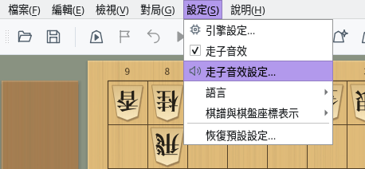
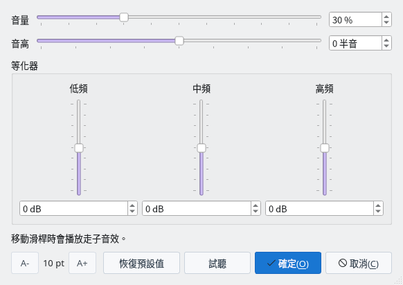

走子音效
走子的瞬間，會發出棋子落在棋盤上的清脆聲音
開關音效
調整音量
等化器
截圖於 Linux 上以繁體中文介面擷取。
開關走子音效
隨時可以從「設定」選單切換走子音效
1
以「設定」→「走子音效」切換
開啟選單列的「設定」，其中有「走子音效」項目，有勾選標記時會播放走子音效。預設為開啟，每次選擇都會在開啟和關閉之間切換。


「設定」選單：以「走子音效」開關，以「走子音效設定…」調整聲音
2
自動儲存設定
開關狀態會自動儲存，下次啟動時繼續使用。選單面板的「設定」分頁中也有相同的「走子音效」和「走子音效設定…」按鈕。
調整音量與音色
在「走子音效設定」對話方塊中調整音量、音高和等化器
1
開啟「設定」→「走子音效設定…」
對話方塊中有音量和音高的橫向滑桿，以及等化器的低頻、中頻、高頻縱向滑桿。放開滑桿時會以目前設定播放走子音效，可以邊聽邊調整。按一下「試聽」隨時可以確認目前設定的聲音（即使關閉了走子音效也會播放）。


走子音效設定對話方塊（初始狀態）
2
以滑桿調出喜歡的聲音
- 音量：0〜100%，預設值為 30%。刻度符合人耳對音量的感受。
- 音高：-12〜+12 半音。調高時聲音更高更短，調低時聲音更低更長。
- 等化器：低頻、中頻、高頻分別在 -12〜+12 dB 之間調整。提高中頻會增強敲擊感，降低高頻會使聲音更柔和。
也可以在各滑桿右側或下方的輸入框中直接輸入數值。
3
確定、取消與恢復預設值
按一下「確定」確認設定。按一下「取消」會恢復到開啟對話方塊時的設定。按一下「恢復預設值」可恢復為音量 30%、音高 0、等化器 0 的初始設定。確認的設定會自動儲存，下次啟動時繼續使用。
左下角的「A-」「A+」可以調整對話方塊的文字大小。文字大小和對話方塊大小也會在下次繼續使用。